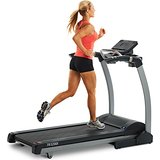
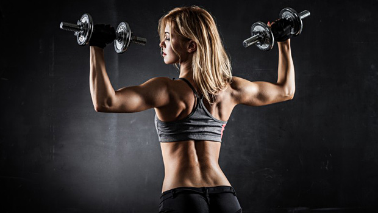
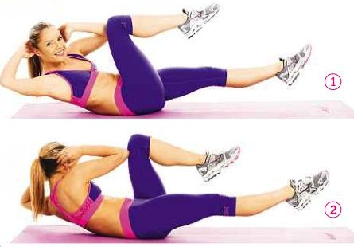

Hey, my name is Sophie Bluestein and I really like fitness and health. I have always been interested in the science behind working out and taking care of your health and body. I also enjoy working out and finding new ways to stay healthy and fit. I have decided to create a webpage showing ways to stay in shape and healthy.
Five benefits of Exercise
1.boosts your mood and relieves stress.I began to really like exercise, health, and fitness when I turned fifteen. I realized that in order to look and feel confident, you had to work for it. I began reading fitness magazines and other articles that gave me ideas on how to incorporate activity and exercise into my busy schedule. Over the years, I have tried many different types of workouts and exercises. I hope this page makes you want to get up and start and moving!!!
My goal for this webpage is to provide a wide variety of fitness and exercise ideas that make you want to get up and try them out. This page will not only give an example of the type of exercise, I will also provide a brief explanation of its benefits to your body and health. I hope this page gets you excited about working out!
| Type of Exercise | Benefits | Picture |
|---|---|---|
| High Intensity Interval Training | HIIT is any workout that consists of intense bursts of activity followed by less intense work. This can be anything from sprints, to stablizing exercises like jumping jacks, burpees, skaters, and high knees. Any cardio activity that gets your heart rate above its normal working rate is considered high intensity. The benefits of HIIT is that it burns fat, it is quick and efficient, and also helps tone the entire body. |  |
| Low Intensity Interval training | Low intensity interval training is great a great way to incorporate more moderate cardio exercise into your workout routine. Although it is not as efficient as high intensity workouts, LIIT is great for burning off those extra calories and it can be done in fun ways that do not feel like exercise. Examples of low intensity workouts are fast walking, hiking, biking at a steady pace, or rowing. Also, activities like mowing the lawn and kayaking are considered LIIT. | |
| Strength and Resistance Training | Strength and resistance training involves weights, bands, and weight machines. This type of exercise is used to tone and strengthen muscles. By incorporating more strength and resistacne curcuits into your workout routine, you will quickly see your body shape and muscle mass transform. Also, weigh training also helps to boost your metabolism and fat burning capabilities.Examples of exercies are anything using free weights, squats, lunges, planks, weighted arm exercises, and many more. |  |
| Core training and Flexibility | Working out your core and mid section is key to successful exercise regiments. Strengthening your core also helps strengthen your back and improve your overall posture. Additionally, flexibiliity exercies and stretching also are key to workouting out. The very low intensity form of exercise allows your body to take time to heal and repair.Some examples are core exercises are cruches, scissor kicks, planks, bicycle crunches,and many more. |  |
I hope that you have learned a few facts about the most benficial types of exercise. I encourage you to try some of the workouts out for yourself and find some that are fun and also beneficial to you and your personal fitness goals and health needs.